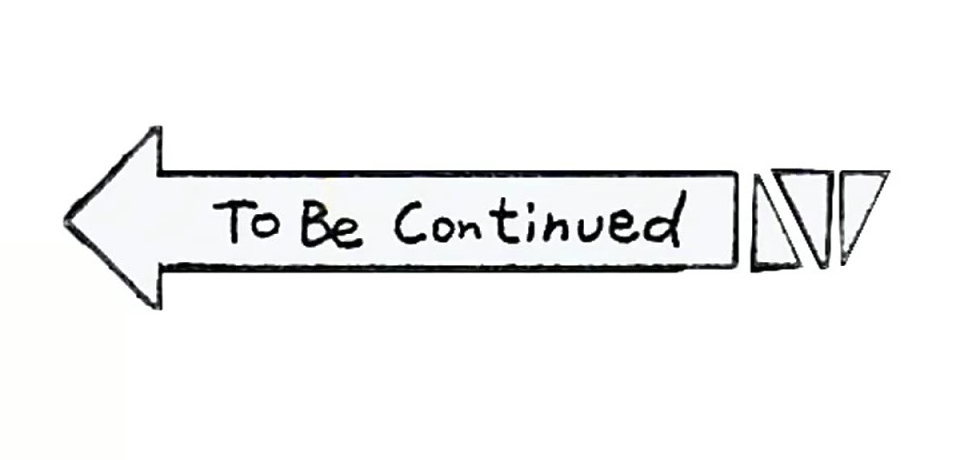
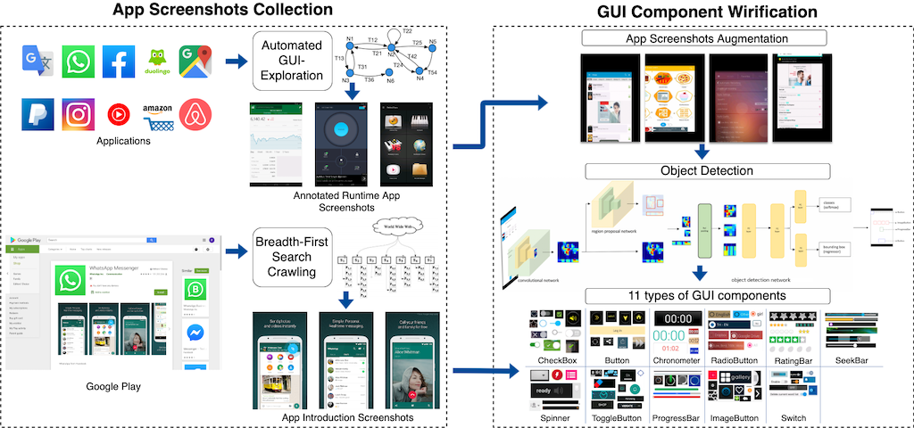
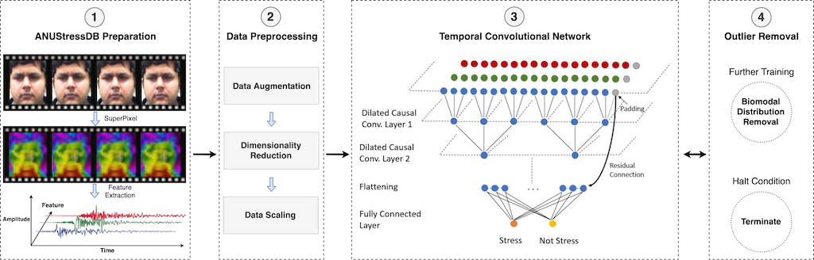
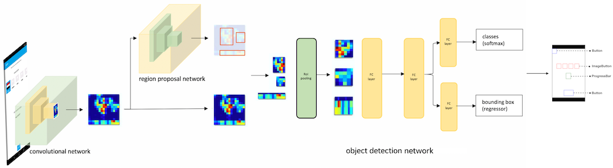

Sidong Feng
AI Center
NUS (Suzhou) Research Institute
Home
Publications
Education
Awards
Personal
Resume
Contact
Publications

Exploring anchor text in Stack Overflow
Tagging-based Search
Conference Articles
In the process of submitting to ACM Conference on Computer Supported Cooperative Work and Social Computing [CSCW 2020]

Gallery D.C.: An Auto-created GUI Component Gallery for Design Search and Knowledge Discovery
Conference Articles
Sidong Feng
, Chunyang Chen, Zhenchang Xing
In the process of submitting to International Conference on Software Engineering [ICSE Demos 2020]
Webpage
•
Video

Dynamic Facial Stress Recognition in Temporal Convolutional Network
Conference Articles
Sidong Feng
International Conference on Neural Information Processing [ICONIP 2019]
Publication year: 2019
PDF
•
Poster

Gallery D.C.: Design Search and Knowledge Discovery through Auto-created GUI Component Gallery
Conference Articles
Chunyang Chen,
Sidong Feng
, Zhenchang Xing, Linda Liu, Shendong Zhao, Jinshui Wang
ACM Conference on Computer Supported Cooperative Work and Social Computing [CSCW 2019]
Publication year: 2019
PDF
•
Webpage
•
PPT
•
Blog
{kind=link}